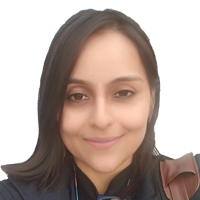

PRIVATE SECTOR NETWORK BOARD
Chair of the Board:
Dr. Zaffar Sadiq Mohamed-Ghouse
Director, Advisory and Innovation
Woolpert Asia-Pacific
Australia
Region: UN-GGIM Asia Pacific
Deputy Chair of the Board:
Valrie Grant
Founder/Chairwoman, GeoTechVision, Jamaica
Region: UN-GGIM Americas
UN-GGIM PSN Secretary:
Peter Ter Haar
Ter Haar Geoinnovation
United Kingdom
Region: UN-GGIM Europe
UN-GGIM PSN Secretariat:
Dr. Shivangi Somvanshi
Director - Geospatial Knowledge Infrastructure, Geospatial World, India
Region: UN-GGIM Asia Pacific
Board Members:
Nadine Alameh, Ph.D
CEO, Open Geospatial Consortium, USA
Region: UN-GGIM Americas

Devleena Bhattacharjee
CEO, Numer8 Analytics Pvt. Ltd, India
Region: UN-GGIM Asia Pacific
Anamika Das
Vice President – Product Management, Geospatial World, India
Region: UN-GGIM Asia Pacific
Willy Govender
CEO
TERRA ANALYTICS, South Africa
Region: UN-GGIM Africa
Dr. Kumar Nuvulur
Sr. Director, Global Industry Business Development, Maxar Technologies, USA
Region: UN-GGIM Americas
Dr. Saad Alhamlan
CEO, Gravity Geospatial Services
Saudi Arabia
Region: UN-GGIM Arab States
Ben Addou Idrissi Kamal
CEO, ETAFAT
Morocco
Region: UN-GGIM Arab States
Peter Baumann
CEO, Rasdaman GmbH
Bremen
Region: UN-GGIM Europe
Felix Orina
Managing Director, Orbital Africa
Kenya
Region: UN-GGIM Africa
Former Chairs:
Sanjay Kumar
CEO, Geospatial World
India
Region: UN-GGIM Asia Pacific
Steven Hagen
Vice President Development, Oracle
USA
Region: UN-GGIM Americas